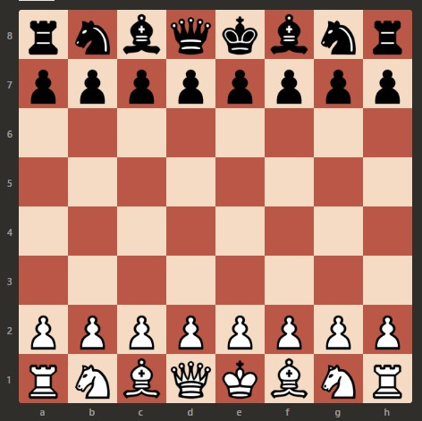

**Música para acompañamiento**
El ajedrez es un juego de estrategia milenario que
enfrenta a dos jugadores en un tablero de 64 casillas
dispuestas en un formato de 8x8. Cada jugador controla
un conjunto de 16 piezas: un rey, una dama, dos torres,
dos alfiles, dos caballos y ocho peones. El objetivo
del juego es lograr el “jaque mate” al rey del oponente,
dejándolo sin movimientos legales para escapar.
Según Ruthven, Harold (1913):
Históricamente, el ajedrez debe clasificarse como un
juego de guerra. Dos jugadores dirigen un conflicto entre
dos ejércitos de igual fuerza en un campo de batalla
de extensión limitada y sin ofrecer ninguna ventaja
de terreno a ninguno de los dos bandos. Los jugadores
no cuentan con otra ayuda que la que les proporciona
su propia capacidad de razonamiento y la victoria
suele recaer en aquel cuya imaginación estratégica
es mayor, cuya dirección de fuerzas es más hábil y
cuya capacidad para prever posiciones está más
desarrollada.
Elementos básicos del Ajedrez:
El tablero:
Formado por 64 casillas alternadas en colores claros y
oscuros, siguiendo una disposición que garantiza que la
esquina inferior derecha del tablero sea siempre de
color claro.

El movimiento de las piezas: Cada una tiene movimientos
específicos:
“Lo más útil que aprendí del ajedrez es tomar buenas decisiones sobre datos incompletos en un tiempo limitado.”
- Magnus Carlsen (2019)
Índice